Blog


Onramper and Exodus Launch Cross-Chain Swaps
Onramper partners can now integrate aggregated crypto swaps directly within their applications.
February 20, 2025 – Onramper, the world’s leading fiat-to-crypto on-ramp aggregator, today announced the launch of its cross-chain, crypto-to-crypto swaps service. Now, Onramper partners can integrate swaps directly within their applications, empowering users to seamlessly swap between cryptocurrencies with the most advanced liquidity engine on the market.
With Onramper’s new swaps aggregator, termed “Onramper Swap,” users can enjoy compliant, secure, and lightning-fast swaps of 100,000 tokens across 50+ networks. Onramper’s premium swap engine is powered by XO Swap by Exodus, which sources users the best rates across 11+ liquidity providers.
“Cross-chain decentralized swaps products are traditionally inefficient and offer limited support across blockchains,” said Thijs Maas, CEO of Onramper. “Onramper Swap was developed to address these gaps by enabling seamless swap aggregation across diverse liquidity sources, delivering a faster and more efficient user experience. We're thrilled to partner with Exodus, a leading industry innovator, to bring this powerful swap engine to a wider audience.”
The launch of cross-chain swaps marks an expansion of Onramper’s existing partnership with Exodus. Exodus integrated Onramper’s on-ramp stack in 2024 to broaden the range of payment methods available to its users, including options like Interac in Canada and Unified Payments Interface (UPI) in India. Exodus users benefit from Onramper's sophisticated routing engines that recommend the best conversion in real-time.
"Cross-chain swaps should be effortless, and that’s exactly what this integration delivers. With XO Swap powering Onramper’s latest offering, users gain access to deep liquidity, competitive rates, and institutional-grade security—all built and tested at scale," said Kevin Wood, Director of Revenue Operations at Exodus.
Onramper’s swaps product arrives on the heels of its recent off-ramp launch, making it possible to integrate the world’s best off-ramps in a single sweep and ensuring global coverage, diverse payout methods, and best-price execution. Today, Onramper offers industry leading on-ramp, off-ramp, and swap aggregation solutions.
Onramper Swap: Features and benefits
Unparalleled choice: Onramper Swap supports 100,000 tokens across 50+ networks including EVM, Bitcoin, XRP, SVM, and Cosmos.
Competitive rates: Liquidity is sourced from 11+ sources, both centralized and decentralized, ensuring the best rates available.
Fully customizable: Partners can customize Onramper Swap to match their branding and add logos for a fully native experience.
Enterprise ready: Onramper Swaps is powered by XO Swap, which is built and tested at scale by the Exodus team. Onramper’s offering can be integrated in 10 minutes through a seamless plug-and-play process.
Secure: With nine years of experience, Halborn audits, and an active bug bounty program, XO Swap is powered by premium security.
About Onramper
Onramper is the leading fiat-to-crypto payments aggregator, providing a turnkey API-based solution for dynamically routing fiat-to-crypto onramp flows based on algorithms optimizing for conversion, fees and payment methods. Onramper’s platform allows users of clients to buy 2000+ digital assets, in over 190 countries with over 130 payment methods in 120 currencies, with advanced routing options and unified analytics. The company is based in the Netherlands. To learn more about Onramper, visit www.onramper.com.
About Exodus
Exodus is a financial technology leader empowering individuals and businesses with secure, user-friendly crypto software solutions. Since 2015, Exodus has made digital assets accessible to everyone through its multi-asset crypto wallets prioritizing design and ease of use.
With self-custodial wallets, Exodus puts customers in full control of their funds, enabling them to swap, buy, and sell crypto. Its business solutions include Passkeys Wallet and XO Swap, industry-leading tools for embedded crypto wallets and swap aggregation.
Exodus is committed to driving the future of accessible and secure finance. Learn more at www.exodus.com or follow us on X at www.x.com/exodus.

Mistakes wallets make when designing their on-ramp flows
Common UX flaws in wallets onramping flows.
When it comes to fiat on-ramping, UX is king. And while the UX of ramps providers certainly leave a lot to be desired - UI bugs, mediocre card conversion, clunky Know-Your-Customer processors - there’s also a lot that’s in control of the wallets that integrate these services.
Currency localization
Imagine going to a webstore where products are denominated in the wrong currency. You’ll think “this isn’t for me” and leave.
Yet across the top cryptocurrency wallets, it is common for fiat currencies to not be localized. In fact, in most of the top 10 wallets in the space, I had to manually try and find a way to change the fiat currency.
Some will argue that lack of localization of fiat currencies exists for privacy reasons. But users looking to buy crypto with fiat have to go through Know-Your-Customer (KYC) anyway, which includes filling in their physical address - and often even uploading their passport.
Of course, whether a ramp provider’s services can even be used depends on both fiat currency and country support, so providing a list of ramp options without localisation just results in sending users down dead paths.

Default amounts
In a number of wallets - including leading wallets like MetaMask and Phantom - the default amount displayed is 0. Have you ever wanted to buy $0 worth of cryptocurrency? Probably not.
So how should we think about default amounts?
In my view, the best way to approach default amounts is to use a round number that is higher than the median purchase.
This median changes from country to country, as the average transaction amount in Nigeria, for example, will be lower than in the United States. Therefore, the median should be determined on a country-by-country basis.
The amount displayed should adjust depending on the fiat currency, as at the time of writing every dollar is worth 1577 Nigerian Naira (not a very round number).
Payment method choice
Ask people from the Netherlands, India, Nigeria, the United States and the Philippines which payment methods they want to use to buy crypto, and each will give an entirely different answer.
Yet, the majority of the top cryptocurrency wallets do not support most of the payment methods that will be mentioned.
Other wallets have created flows with ramp providers that support many APMs, without creating a “payment method” selector. This results in the user not being able to compare the difference in price between payment methods.
In addition, any onramp provider that has more than 10 payment methods will be able to tell you how this quickly results in integrations becoming outdated, with the list of payment methods displayed to the user not reflecting what is actually supported (see below).
Payment method localization
For those wallets that do have a range of local payment methods enabled, credit cards are often selected as the default option, despite cards having notoriously bad conversion rates when it comes to buying cryptocurrencies.
Needless to say, it is important to localise payment methods and recommend the best payment methods to users (so important, in fact, that I’ve dedicated a separate article about it here).

Closing thoughts
It is time for us to build flows users enjoy. Next week I will cover on-ramp selection in part 2 of this series.
I invite everyone - client or not - to have OnRamper analyze your app. We’ll do a free analysis to identify the good, the bad, and the ugly. Schedule a call via the link above and reply with: "Please analyze my current setup."

Why you should not rank onramps based on fees
Why Priced-based ranking is not the best choice?
Price-based ramp ranking sounds logical—cheaper is better, right?
Wrong. This approach is deeply flawed, and it’s hurting your platform more than you realize. Why?
Because ramp providers are gaming the system.
They know that by initially offering the lowest price, they can move to the top of your list. But here's the kicker: once they’ve secured the transaction, they hike the price during the transaction flow, leaving your users to pay more than they bargained for.

It’s an all-too-common occurrence. In fact, if you’re a top-tier wallet, it’s happening to you right now, and it’s probably being done by multiple ramp providers.
At Onramper, we call this sneaky practice “quote spoofing”, and it’s been happening across the industry for years.
Here’s how you can check if this happens in your app:
- Enter an amount of fiat to buy for, and go to the ramp comparison screen.
- Write down the amount of crypto offered by each ramp provider, and open all onramp widgets.
- Click-through to the end of the transaction in each widget, and write down the final crypto received.
- Compare the amounts from step 1 and step 3.
Trust erosion and lost users
What’s the real impact of quote spoofing? First and foremost, it breaks trust.
Your users come to your platform expecting transparency and the best experience to access crypto. But when they see prices increase mid-transaction, they feel deceived. Shattered trust isn’t easy to repair.
As conversion rates drop, so does your onboarding volume. That’s a direct hit to your growth, all because price was prioritized over actual conversion rates and user experience.
What’s worse, this practice doesn’t just frustrate users—it also makes their transactions more expensive, which pushes them away even more.
Most ramp providers have been guilty of quote spoofing at one time or another. It’s not because they’re inherently bad actors, but rather because price-based ranking encourages this behavior.
The problem is systemic. Perverse incentives force ramp providers to prioritize getting picked over being transparent. To insiders, it is a known problem, and one that Onramper has been tackling for years.
Onramper Terminal: A window into the problem
Onramper's clients have been made aware of this practice for a long time. Thanks to the Onramper Terminal, they have insights into the accuracy of quotes and effective fees, giving them the information they need to prevent quote spoofing.
The Onramper Terminal shines a light on the murky tactics some ramp providers use, providing your platform with the data needed to call them out or change routing for bad actors.

In the Fee Transparency Dashboard that comes with Onramper Enterprise, for example, you get perfect insight into ‘quote accuracy’, showing exactly which ramp providers are guilty of quote spoofing in your ramps marketplace and by how much.
The Onramper Terminal also gives you visibility into how ramps are actually performing. Instead of just relying on price, you can see metrics on quote accuracy, conversion rates, payment authorization rates, and payment methods across your entire ramps stack.
This allows you to offer your users an experience that’s not only fair but also optimizes for successful transactions.
User loss = lower conversions
Here’s the bottom line: relying on price alone to rank ramps is costing you. It's ripping off your users and results in ramp providers gaming the system and sub-optimal UX.
When users abandon transactions halfway through because of price spikes, your conversion rates plummet.
Onramps offering lowball quotes just to get picked initially, only to increase prices later, results in more than just bad user experience—it results in fewer completed lifetime transactions.
And the fewer transactions that go through, the fewer users you onboard. In short, it’s the opposite of what your platform needs.
Moving beyond price-based ranking
So, what’s the fix?
It’s simple: rank based on more factors than price alone. Platforms that include other metrics, like expected success rates, KYC friction, and payment method compatibility alongside price see higher user satisfaction and better conversion rates.
Imagine offering your users the best onramp for their specific situation, not just the one offering the lowest (and often misleading) quote.
The result? A better experience for your users and higher completion rates for you. Onramper is leading the charge by providing advanced onramp routing based on pricing, success rate data and user-friction.
The best part? Our onramp recommendations boost your conversion rates beyond what you think is possible. (More on this in next week’s post!)
Curious to your thoughts,
Thijs
thijs@onramper.com

Moonshot Unlocks 180+ Payment Methods for Traders with Onramper Partnership
Through the integration, Moonshot users* can now access more than 180 local payment methods across over 190 countries.
AMSTERDAM, April 6, 2026 — Onramper, the world's leading fiat-to-crypto onramp aggregator, announced a partnership with Moonshot, the self-custodial trading app built on Solana, to remove one of the biggest barriers to entering onchain markets: funding accounts across different markets.
Through the integration, Moonshot users* can now access more than 180 local payment methods across over 190 countries, making it easier to move between fiat and crypto using familiar payment methods. The result is faster onboarding, higher conversion rates, and expanded access to onchain trading worldwide.
“Moonshot is one of the fastest-growing platforms in crypto,” said Thijs Maas, CEO of Onramper. “By expanding localized payment options, we’re making the platform accessible to more users globally and unlocking broader participation in onchain trading.”
Moonshot is designed for users looking for direct exposure to the digital asset market without the friction of traditional crypto platforms. The app combines a self-custodial wallet with no seed phrases, real-time market data, and a mobile-first experience optimized for speed and simplicity. Since launch, Moonshot has grown to more than two million users and reached the top of the App Store in multiple countries.
“Access has always been the bottleneck for global adoption,” said a spokesperson at Moonshot. “Every new payment method we add unlocks new users, and this partnership turns previously hard-to-reach regions into active onchain markets.”
Onramper’s aggregation layer automatically routes users to the most competitive onramp provider based on location, payment method, and availability, optimizing for conversion and reducing drop-off at the point of deposit. For Moonshot, this means broader global coverage while maintaining a frictionless in-app experience.
Learn more at onramper.com and moonshot.com.
*The integration is live and available to users globally, excluding the United States.
About Onramper
Onramper is the leading fiat-to-crypto payments aggregator, providing a turnkey API-based solution for dynamically routing fiat-to-crypto onramp flows based on algorithms optimizing for conversion, fees, and payment methods. Onramper's platform allows users to buy 2,000+ digital assets in over 190 countries with over 130 payment methods across 120 currencies, with advanced routing options and unified analytics. The company is based in the Netherlands. To learn more, visit www.onramper.com.
About Moonshot
Moonshot is a leading mobile application for discovering, buying, and selling digital assets on the Solana blockchain. With a self-custodial wallet, a curated token experience, and support for familiar payment methods like Apple Pay, Moonshot has onboarded millions of users into on-chain trading, establishing itself as one of the fastest-growing apps in the market.

Best Crypto Onramp Guide 2026: Top Providers & Aggregators Reviewed
Discover the best crypto onramp for 2026. We compare Stripe, Revolut, Banxa, and Paybis, and explain why onramp aggregators like Onramper are the superior choice for fees and success rates.
Best Crypto Onramp Guide 2026: The Ultimate Path to Blockchain
In 2026, the bridge between traditional finance (fiat) and the blockchain ecosystem (crypto) is more critical—and more crowded—than ever. Whether you are a user looking to buy your first stablecoin or a developer building the next great Web3 application, choosing the Best crypto onramp is the single most important decision for your crypto journey.
This comprehensive guide covers everything you need to know about fiat-to-crypto onramps in 2026, analyzes the top providers like Stripe, Revolut, and Banxa, and explains why smart aggregators like Onramper are increasingly becoming the superior choice for the modern crypto economy.
What is a Crypto Onramp and Why It Matters in 2026
A crypto onramp is the infrastructure that allows users to exchange fiat currency (like USD, EUR, or GBP) for cryptocurrency (like Bitcoin, Ethereum, or USDC). Think of it as the digital doorway that converts money from your bank account or credit card into digital assets on a blockchain.
The Landscape in 2026
By 2026, the "Wild West" days of crypto are largely behind us. With regulations like MICA (Markets in Crypto-Assets) fully implemented in Europe and clearer guidelines in the US, onramps have evolved.
They are no longer just about "buying Bitcoin"; they are about:
- Compliance: Seamless KYC (Know Your Customer) checks that don't kill conversion.
- Speed: Instant settlement via rails like SEPA Instant or Faster Payments.
- Global Access: Serving users in emerging markets (LATAM, Africa, SE Asia) where traditional banking is fragmented.
If you are building a wallet, a DEX, or an NFT marketplace, your onramp is your lifeline. If it fails, your user leaves.
How Crypto Onramps Work: A Beginner's Guide
For the end-user, the process should feel as simple as buying a pair of shoes online. However, behind the scenes, a complex series of steps occurs:
- User Request: The user selects the crypto they want to buy and the amount in fiat.
- Identity Verification (KYC): The provider verifies the user's identity to comply with anti-money laundering (AML) laws. In 2026, top providers use AI to do this in seconds.
- Payment Processing: The provider charges the user's credit card, bank account, or Apple/Google Pay.
- Liquidity Sourcing: The provider purchases the crypto from a liquidity pool or exchange.
- Blockchain Settlement: The crypto is sent to the user's non-custodial wallet.
The Catch: Different providers specialize in different regions and payment methods. A provider that works perfectly for a credit card user in Germany might fail completely for a bank transfer user in Brazil.
Popular Crypto Onramp Providers in 2026
When searching for the best crypto onramps, you will frequently encounter these industry titans. Here is how they stack up in the 2026 landscape.
1. Stripe
Stripe remains a favorite for mainstream adoption. Their "Stripe Crypto Onramp" is a widget that integrates into apps, offering a highly trusted, familiar checkout experience.
- Pros: Unbeatable trust, excellent UI, high approval rates in the US/EU.
- Cons: Strict geographic limitations and often higher fees compared to crypto-native solutions.
2. Revolut
With Revolut X and their ramp services, Revolut has bridged the gap between neobanking and crypto.
- Pros: Seamless for millions of existing Revolut users, competitive exchange rates (often lower than cards).
- Cons: Users generally need a Revolut account to get the best experience; not a "guest checkout" solution for decentralized apps (dApps).
3. Banxa
Banxa distinguishes itself through massive compliance infrastructure. They are often the go-to for platforms that need to serve users globally while adhering to strict local regulations.
- Pros: Extensive local payment methods (not just cards), high regulatory compliance.
- Cons: KYC can sometimes be more rigorous, leading to slight friction.
4. BTC Direct
A powerhouse in Europe, BTC Direct offers a streamlined, 3-step purchasing process.
- Pros: Deeply integrated into European banking rails (IDEAL, Bancontact), great support.
- Cons: Less focus on non-European markets compared to global giants.
5. Paybis
Paybis has carved a niche by focusing on "self-custody" and serving a wide range of countries with a simple interface.
- Pros: Beginner-friendly, clear fee structure, wide global coverage.
- Cons: Fees on smaller transactions can be noticeable.
The Hidden Problem: Limitations of a Single Onramp
If you are a user or a platform developer relying on just one of the providers above, you are vulnerable to a Single Point of Failure.
- Regional Failures: Stripe might reject a user in Nigeria. Banxa might be undergoing maintenance in Canada.
- Transaction Rejections: Banks often flag crypto transactions arbitrarily. A card that fails on MoonPay might work on Simplex.
- Price Disparity: Fees fluctuate. One provider might charge 4% for a transaction while another charges 1.5% for the same trade.
- Bad UX: If one onramp is down or slow, there's no fallback—resulting in lost conversions.
In 2026, relying on a single provider means losing up to 50% of potential transactions.
How to Choose the Best Crypto Onramps
If you are looking for the best fiat-to-crypto onramp, use this checklist:
- Coverage: Does it support the specific country and local payment methods (Pix in Brazil, UPI in India, SEPA in EU)?
- Fees: Look for transparency. Are network fees (gas) included or added on top?
- Speed: Does the crypto arrive instantly, or does it take hours?
- Limits: Can you buy small amounts ($20) or large institutional sums?
- Aggregation: Pro Tip: Use a platform that utilizes an aggregator to avoid doing this research manually for every transaction.
The Solution: What Is an Onramp Aggregator?
An onramp aggregator is a solution that integrates multiple onramp providers (like Stripe, Banxa, etc.) into a single interface.
Instead of forcing a user to use one specific provider, the aggregator scans the market in real-time. It acts like a travel search engine (like Skyscanner or Kayak) but for buying crypto.
It asks: "Who can get this user their crypto, for the cheapest price, with the highest chance of success, right now?"
Beyond the Credit Card: Why APMs are the Lifeline of Crypto Onboarding
In crypto onboarding, a failed transaction isn’t just a technical glitch—it’s a lost customer. While many platforms default to credit cards as their primary payment rail, this "one-size-fits-all" approach is often the single greatest point of friction.
To unlock true global growth, crypto onramps must pivot from generic solutions toward Alternative Payment Methods (APMs) and deep localization.
The Power of Localization: Data Doesn't Lie
Localization is more than a translated UI; it’s about matching the cultural and financial DNA of a specific region. When you force credit cards on regions that prefer digital wallets or bank transfers, conversion rates don't just dip—they crater.
Data from Onramper highlights the stark reality of the "Credit Card Gap":

The Bottom Line: Recommending the right local payment method over a standard credit card leads to an average 132.2% increase in conversion rates.
4 Pillars of a High-Conversion Onramp Flow
Designing a world-class onramp requires moving beyond simple integration. You need a flow that prioritizes smart defaults and guided routing.
1. Hyper-Localize Currency & Payments
Nothing kills a user's momentum faster than irrelevance. If a user in Brazil lands on a checkout page denominated in USD, they often assume the product isn't for them.
- The Mistake: Defaulting to USD/EUR regardless of user IP.
- The Solution: Use Geo-IP detection to dynamically recommend the best local fiat-to-crypto pairs and APMs.
2. Contextual Integration
In 2026, the biggest killer of conversion is a lack of regional empathy. If a user sees a SEPA transfer request in a non-EU country, they will churn. You cannot simply "add an onramp"—you must integrate the right onramp for the user’s specific banking habits and trust preferences.
3. Balance Global Giants with Regional Specialists
Relying solely on "Tier 1" providers like Stripe or MoonPay is a common pitfall. While excellent for the US and UK, these giants often lack the specific rails needed for emerging markets.
- The Strategy: Use Smart Routing. Send New York users to Stripe, but route Southeast Asian users to regional specialists that support local e-wallets.
4. Eliminate Choice Overload
A user wants to get from fiat to crypto with the least resistance possible; they rarely care about the specific broker. However, because conversion rates vary wildly between providers based on the corridor, choice becomes a burden.
The Solution: An intelligent routing engine. Data shows that 80% of users will follow a pre-selected "Recommended" path. Smart Onramp Routing significantly improves conversion rates compared to traditional card routing across all continents.
By utilizing alternative payment methods, this intelligent routing system achieves much higher success rates, particularly in regions like Europe and North America, where conversion rates are substantially elevated. This approach optimizes the payment process, ensuring more seamless and successful transactions for users globally.
Beware of the "Price Trap"
A common mistake is ranking onramp providers solely by the lowest fee. While users say they want the cheapest option, ranking by price alone often destroys conversion for two reasons:
- Price Spoofing: Some providers advertise "0% fees" but hide costs in a massive spread. A "transparent" 2% fee is often cheaper than a "free" service with a 4% markup on the asset price.
- The Success Gap: The "cheapest" route often has the weakest banking relationships. If a user tries the cheapest option and it fails, they rarely try a second provider—they simply leave.
Pro-Tip: Always rank for Success Rate over Base Cost. It is better to show a provider that costs $1 more but has a 95% success rate than a "cheap" one that fails 60% of the time.
The "Smart Aggregation" Shortcut
Manually integrating dozens of providers to achieve global coverage is an engineering nightmare. This is where Onramper changes the game.
Instead of guessing which onramp is right for which user, an aggregator acts as a dynamic decision engine. Onramper’s algorithm analyzes:
- User Location (Geo-IP)
- Fiat/Crypto Pair (e.g., BRL to SOL)
- Real-time Success Rates for that specific corridor
The result? The user is automatically presented with the path of least resistance. You get the benefits of 30+ providers through a single integration, ensuring that whether your user is in Berlin or Bangkok, they have a localized, high-success way to join the ecosystem.
The Reality of Building Your Own Aggregator
If you’re thinking about building your own aggregator, you’re probably telling yourself what every ambitious Product Manager does:
“How hard can it be? We’ll integrate a few on-ramps and call it a day.”
On paper, it looks simple.
In practice, it’s a slow-motion product tax that compounds every quarter.
Here’s the very predictable lifecycle of an in-house aggregator—and why so many teams regret it.
Phase 1: The “Simple” Pilot
You start with 2–4 on-ramps. Within weeks, you realize:
- One provider lacks key payment methods
- Another doesn’t cover critical regions
- Edge cases are already piling up
The “MVP” is suddenly incomplete before it even launches.
Phase 2: The Expansion Trap
To fill the gaps, you add more providers.
Now you’re juggling:
- Conflicting APIs
- Different currency and payment method codes
- Inconsistent webhook behavior
Feature development slows to a crawl as engineers pause roadmap work just to refactor integration logic.
Phase 3: The Architecture Reckoning
Reality hits when:
- You realise many transactions fail
- You want to make sure you can monitor
- Onramps do not behave consistently
You discover you need custom fallback logic, smart routing, and resilient error handling—all built from scratch. Congrats, you’re no longer integrating onramps, you’re building core data infrastructure.
Phase 4: The Data & Reconciliation Nightmare
Customers and your product managers start reporting issues:
- Transaction statuses differ
- Quote spoofing is rampant
- Fee calculations are heterogeneous
- Definitions of success rates differ
- Reports don’t reconcile
Now you must design a unified data layer to normalize pricing, FX, fees, and reporting across every on-ramp.
This work is invisible to users—but brutally expensive to build.
Phase 5: The Realization
What began as “just a few integrations” has become:
- 12 months of development
- ~5 full-time engineers to get to production
- A system that still needs 2 dedicated FTE every year just to maintain, monitor, and fix
You’ve accidentally built a full payments platform.
And it demands constant firefighting, forever. Meanwhile, 4 new onramps just popped up that seem better than the ones you have. Congratulations - go back to start.
The Hidden Cost
The real damage isn’t just engineering headcount—it’s:
- Roadmap delays
- Opportunity cost
- Product teams stuck maintaining plumbing instead of shipping value
Building your own aggregator isn’t a one-time project.
It’s a long-term commitment you can’t easily unwind.
And that’s the part no one tells you at the start. 😬
The Bottom Line: If you want to maximize profits, focus on what grows your business. On-ramps should be outsourced.
Why Onramper Is the Best Crypto Onramp Solution
Onramper has established itself as the leading aggregator, solving the fragmentation problem of the crypto market. Here is why it is arguably the best onramp solution for 2026:
- Access to Multiple Providers: Integrates 30+ providers (including Banxa, MoonPay, Transak) via a single API, guaranteeing global coverage across 180+ countries.
- Intelligent Routing (Smart Engine): Dynamically routes users to the provider most likely to accept their transaction. If Provider A fails, Onramper suggests Provider B, saving the sale.
- Better Pricing & Availability: By aggregating quotes, users get the most crypto for their fiat. You can see providers competing for your transaction in real-time.
Higher Conversion Rates: Aggregators can boost transaction success rates to over 80%, whereas single providers often hover between 40-60%.

Conclusion
The "Best onramp" in 2026 isn't a single company—it's choice.
While providers like Stripe, Banxa, and Paybis offer excellent individual services, the fragmented nature of global finance means no single provider can win every time. For the most reliable, cost-effective, and successful way to enter the crypto market, onramp aggregators like Onramper represent the future. They remove the friction, optimize the fees, and ensure that the digital economy is accessible to everyone, everywhere.
Ready to optimize your entry into crypto?
- If you are a developer: Stop integrating providers one by one.
If you are a user: Look for platforms powered by aggregation. The future of crypto adoption is aggregated.

Onramper Expands Global Payments Coverage with Integration to Kraken Via Payward Ramp
Onramper’s global payments networks gains access to Kraken’s leading liquidity in 600+ crypto assets via Payward Ramp.
February 26, 2026 – Onramper, the world’s leading fiat-to-crypto onramp aggregator, and Kraken, one of the world’s longest-standing, most liquid and secure cryptocurrency platforms, today announced the successful integration of Payward Ramp by Kraken into Onramper’s industry-leading aggregation platform.
Payward Ramp enables businesses to offer their customers a simple and secure way to instantly buy and sell crypto using familiar payment methods, including cards and local bank transfers. By becoming part of Onramper’s network, Payward Ramp joins more than 30 onramp providers in expanding its global payments coverage, giving businesses direct access to Kraken’s deep liquidity.
The integration with Payward Ramp enables Onramper partners to deliver crypto access to their customers with minimal engineering lift, reducing the complexity traditionally associated with launching compliant fiat-to-crypto flows. Businesses can add crypto buy and sell functionality quickly, while Payward Ramp handles the underlying compliance, licensing, KYC checks and fraud prevention so partners can focus on delivering the right user experience.
Payward Ramp supports the 600+ digital assets across 100+ blockchains available on the Kraken platform, with access to card payments methods, Apple Pay and Google Pay across the U.S, EU, and UK. It’s supported by Kraken’s secure, regulated infrastructure, which include a series of money transmitter and CASP licenses in key jurisdictions.
“Payward Ramp delivers a premium buying experience backed by Kraken, one of the most trusted and robust infrastructures in crypto,” said Thijs Maas, CEO of Onramper. “We’re constantly evaluating the best ramps in the market, and adding Payward Ramp shortly after launch ensures our partners always have access to the highest-quality onramps with minimal integration effort.”
For crypto platforms, wallets and fintechs, integrating local payment methods across multiple regions has historically been a complex and resource-intensive process. Onramper’s aggregation technology removes this barrier by unifying global and local onramps within a single API, giving partners instant access to the world’s most comprehensive fiat-to-crypto infrastructure.
“Payward Ramp was built to leverage Kraken’s leading liquidity in order to provide access to crypto at a global scale,” said Brett McLain, Head of Payward Ramp. “By integrating with Onramper, we’re connecting into a broader ecosystem of wallets, fintech and platforms, making it easier for partners to launch compliant crypto experiences across regions without the complexity of building and maintaining their own onramp stack.”
Payward Ramp is the latest addition to Onramper’s growing aggregation network. In October 2025, Onramper announced it had surpassed 30 aggregated onramps, reinforcing its position as the leading onramp aggregator and enabling partners to connect customers to crypto globally without managing multiple integrations, licenses or payment providers.
To learn more, please visit onramper.com and kraken.com/institutions/ramp.
About Onramper
Onramper is the leading fiat-to-crypto payments aggregator, providing a turnkey API-based solution for routing onramp flows across multiple providers through a single integration. Onramper enables access to more than 2,000 digital assets across 190+ countries, supporting over 130 payment methods worldwide. The company is based in the Netherlands. Learn more at www.onramper.com.
About Payward
Payward, Inc. is a unified financial infrastructure platform that powers a family of products advancing an open, global financial system. Built on a single shared architecture, Payward enables customers to hold, trade, earn, pay, and invest across asset classes without friction or fragmentation.
At its core, Payward provides the infrastructure layer behind Kraken and a growing set of purpose-built products, including NinjaTrader, Breakout, xStocks, and CF Benchmarks.
Payward separates infrastructure from product expression. Each product surface is designed for a specific customer segment, regulatory regime, and use case, while operating on the same global foundation:
- One global liquidity pool
- One unified risk and margin engine
- One collateral and settlement system
- One compliance and licensing framework
This shared architecture allows Payward to scale efficiently, launch new products at low marginal cost, and serve diverse global markets while maintaining consistent risk management, regulatory integrity, and operational resilience.
For more information about Payward, please visit www.payward.com
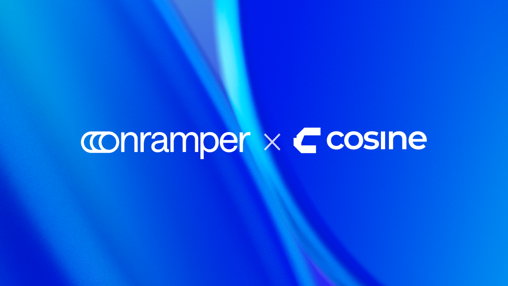
Cosine Wallet Partners with Onramper to Expand Global Crypto Access
Integration brings buy, sell, and swap functionality with 180+ local payment methods to Cosine’s multi-chain self-custodial wallet worldwide.
AMSTERDAM, Feb. 17, 2026 /PRNewswire– Onramper, the world’s leading fiat-to-crypto onramp aggregator, today announced a partnership with Cosine Wallet, a multi-chain self-custodial wallet designed to make crypto transactions simple, intuitive, and accessible for users around the world.
Through the integration, users on Cosine Wallet can now buy, sell, and swap crypto directly within their wallet using Onramper’s onramp and offramp infrastructure. The partnership enables access to more than 180 local deposit payment methods, giving users greater flexibility to move between fiat and crypto regardless of where they are located.
Cosine Wallet is built for everyday crypto users who want full control of their assets without sacrificing usability. By combining Cosine’s clean, user-friendly wallet experience with Onramper’s global aggregation layer, the partnership removes common barriers to entry and helps users manage their crypto activity in one place.
“Cosine is focused on delivering a wallet experience that feels simple and reliable for users worldwide,” said Thijs Maas, CEO of Onramper. “By integrating Onramper’s onramp and offramp capabilities, Cosine users gain access to a wide range of local payment methods, making it easier to buy, sell, and swap crypto across multiple chains.”
The integration supports onramps, offramps, and cross-chain swaps across a multi-chain, multi-currency self-custodial wallet. This allows users to enter the crypto market, move value across chains, and manage their assets without leaving the Cosine Wallet interface.
“Our goal is to be the crypto wallet people genuinely enjoy using,” said Obafunso Ridwan, Co-founder and CEO of Cosine Wallet. “That means combining a clean user experience with powerful functionality.”
Joseph Samuel, Chief Technology Officer at Cosine Wallet, added, “Integrating Onramper strengthens our infrastructure by expanding global payment coverage and improving access to buy, sell, and swap features across chains. It allows us to deliver a smoother experience while keeping users fully in control of their funds.”
The integration is live and available to users globally, excluding the UK and OFAC-sanctioned countries.
Learn more at onramper.com and getcosine.app
About Onramper
Onramper is the leading fiat-to-crypto payments aggregator, providing a turnkey API-based solution for dynamically routing fiat-to-crypto onramp flows based on algorithms optimizing for conversion, fees and payment methods. Onramper’s platform allows users of clients to buy 2000+ digital assets, in over 190 countries with over 130 payment methods in 120 currencies, with advanced routing options and unified analytics. The company is based in the Netherlands. To learn more about Onramper, visit www.onramper.com.
About Cosine Wallet
Cosine Wallet is a multi-chain self-custodial crypto wallet designed for users who want a simple, powerful way to manage their crypto. Built with a focus on clean design and usability, Cosine allows users to buy, sell, and swap assets across multiple chains from one interface, while maintaining full control over their funds. With support for cross-chain activity and multiple currencies, Cosine Wallet positions itself as an all-in-one solution for everyday crypto transactions, making it easier for users around the world to interact with crypto in a way that feels intuitive and accessible. In addition to supporting cross-chain activity, Cosine’s mobile app includes a Gasless Sell feature, allowing users to convert crypto to fiat without needing native tokens for gas fees. To learn more about Cosine Wallet, visit www.getcosine.app
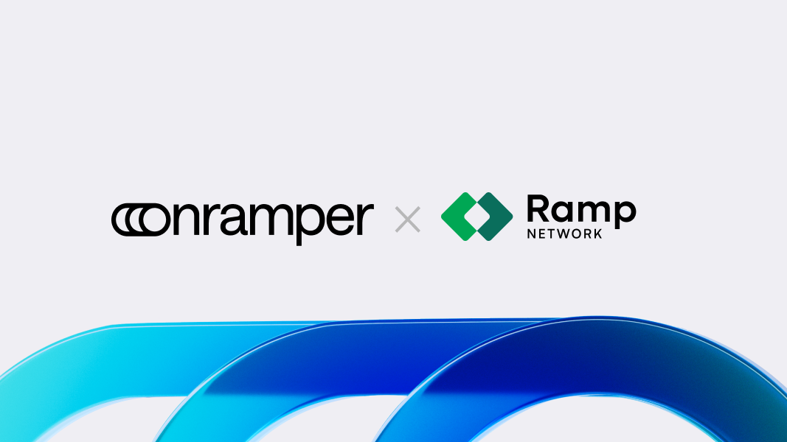
Onramper Integrates Ramp Network to Expand Global Crypto Payment Options
Onramper, the leading fiat-to-crypto onramp aggregator, has integrated Ramp Network, expanding its network of onramps and improving how users worldwide buy and sell digital assets.
Onramper, the leading fiat-to-crypto onramp aggregator, has integrated Ramp Network, expanding its network of onramps and improving how users worldwide buy and sell digital assets.
Through this partnership, Onramper clients instantly gain access to Ramp Network’s fast, compliant, and high-conversion payment flows without any additional development work. Businesses using Onramper can now offer lightning-fast purchases across major payment methods, including cards, Apple Pay, Google Pay, Revolut Pay, Pix, and instant bank transfers, all through a single API.
The collaboration also unlocks additional token listing opportunities for Onramper’s token listing support, providing even more flexibility and coverage for partners and their users.
The rollout of Ramp Network within the Onramper ecosystem will begin soon on a client-by-client basis. Existing Onramper partners will automatically gain access to Ramp Network without needing to make any changes to their setup.
“Ramp Network’s focus on speed, compliance, and user experience makes them a perfect addition to our network,” said Thijs Maas, CEO of Onramper. “This partnership gives our clients even more ways to connect users to crypto.”
“We’re aligned with Onramper in our mission to remove barriers to Web3 access,” said Przemek Kowalczyk, CEO and Co-Founder of Ramp Network. “This collaboration is a win for users, businesses, and the broader crypto ecosystem, offering faster, safer, and more flexible payment flows worldwide.”
The partnership strengthens Onramper’s aggregated network, enhancing coverage, conversion, and payment diversity through a single, unified connection.
To learn more, visit onramper.com and rampnetwork.com
About Onramper
Onramper is the leading fiat-to-crypto payments aggregator, providing a turnkey API-based solution for dynamically routing fiat-to-crypto onramp flows based on algorithms optimizing for conversion, fees and payment methods. Onramper’s platform allows users of clients to buy 2000+ digital assets, in over 190 countries with over 130 payment methods in 120 currencies, with advanced routing options and unified analytics. The company is based in the Netherlands. To learn more about Onramper, visit www.onramper.com.
About Ramp Network
Ramp Network is a global onramp and offramp provider offering secure, compliant, and user-friendly fiat-to-crypto payment solutions. With support for 110+ tokens across more than 40 blockchains, Ramp Network enables users to buy, sell, and swap crypto instantly using cards, Apple Pay, Google Pay, bank transfers, Revolut Pay, Pix, and other local methods.Its intuitive design and one-tap checkout experience make crypto purchases fast and frictionless, while strong regulatory compliance ensures safety and trust for users around the world.
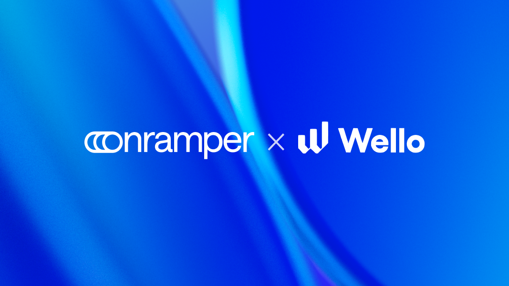
Wello Joins Onramper’s Network to Expand Crypto Onboarding in Nigeria
Collaboration strengthens Onramper’s Nigerian payment rails for all partners
December 19, 2025 – Onramper, the world’s leading fiat-to-crypto onramp aggregator, announced that it has integrated Wello, a global fiat on- and off-ramp provider, to increase crypto accessibility in Nigeria. By integrating with Onramper, Wello’s localized payment rails will reach a wider audience, beginning with Nigeria and expanding across Asia. This partnership is part of the broader plan to bring stablecoin-powered payments to local markets around the world.
Nigeria remains one of the most active crypto markets globally, but ensuring reliable and high-performing fiat-to-crypto rails in the country remains a challenge. By incorporating Wello’s localized infrastructure, Onramper strengthens its presence in the region and delivers smoother, more successful conversion paths for every partner operating in Nigeria.
“Wello will strengthen the global coverage of our aggregation engine,” said Thijs Maas, CEO of Onramper. “Its dependable and deeply localized infrastructure gives our partners, and their users, the onboarding experience they expect, in Africa and beyond.”
Wello brings strong regional expertise across Africa and the Middle East, with payment rails designed for fast-growing, high-adoption crypto markets. Its localized approach reduces failed transactions and improves uptime for Nigerian users.
Onramper continues to lead the onramp aggregation space, connecting more than 30 global fiat gateways and supporting over 2,000 digital assets. All partners integrated with Onramper will automatically gain access to Wello’s rails, unlocking improved payment methods, stronger reliability, and broader coverage in Nigeria without requiring any technical changes.
“Our goal is to build dependable stablecoin payment rails for users around the world,” said Helen Hai, Co-Founder at Wello. “Partnering with Onramper makes our infrastructure available to more wallets, exchanges, and platforms, unlocking a smoother, more efficient onboarding experience.”
Onramper’s global network supports more than 130 payment methods across 190+ countries. Its smart routing engine recommends the best available conversion in real time, maximizing the likelihood of a successful transaction and helping users receive the most crypto for their fiat.
To learn more, please visit onramper.com and wello.tech.
About Onramper
Onramper is the leading fiat-to-crypto payments aggregator, providing a turnkey API-based solution for dynamically routing fiat-to-crypto onramp flows based on algorithms optimizing for conversion, fees and payment methods. Onramper’s platform allows users of clients to buy 2000+ digital assets, in over 190 countries with over 170 payment methods in 120 currencies, with advanced routing options and unified analytics. The company is based in the Netherlands. To learn more about Onramper, visit www.onramper.com.
About Wello
Wello brings real utility to stablecoins. With compliant fiat on/off ramps, instant QR payments, and cross-border settlement. Wello’s mission is to bridge Web3 with real-world payments, empowering people to send global, spend local, effortlessly.
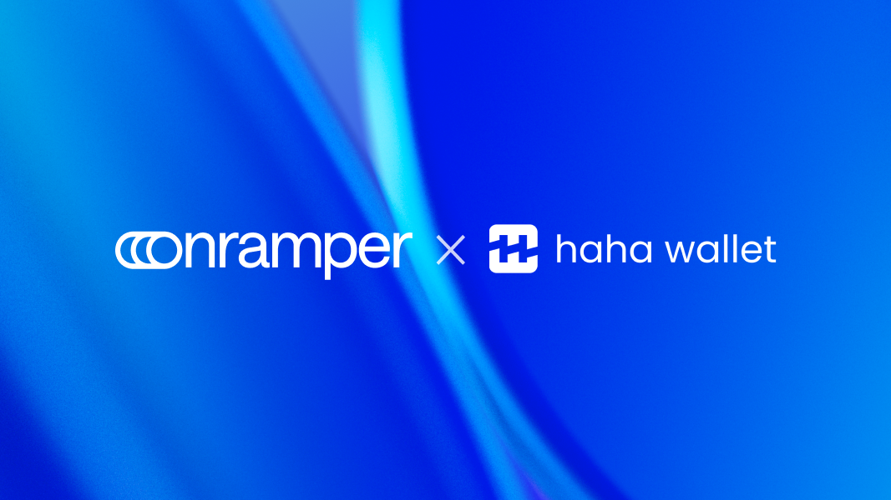
HaHa Wallet Partners with Onramper to Expand Access to the Monad Ecosystem
Partnership follows Monad Mainnet launch to unlock global onboarding
AMSTERDAM, Dec. 17, 2025 — Onramper, the world’s leading fiat-to-crypto onramp aggregator, today announced a strategic partnership with HaHa Wallet, next-generation, Monad-native crypto wallet, to broaden global accessibility for users engaging with Monad ecosystem.
Through the integration, HaHa Wallet users can now buy crypto using over 130 local payment methods across 190+ countries, benefiting from competitive rates and optimized fees. Following the launch of Monad’s public Mainnet in November 2025, the partnership makes it easier for users worldwide to enter Monad and begin trading, bridging, and exploring dApps.
HaHa Wallet has quickly become a leading gateway into Monad, offering a fast, intuitive, and reward-driven user experience. With Onramper’s global payments coverage and smart routing engine, users can move from fiat to crypto in just a few clicks and start interacting onchain.
“Realizing Monad’s full potential depends on frictionless onboarding,” said Thijs Maas, CEO of Onramper. “Our partnership with HaHa Wallet brings trusted, localized payment access directly into the Monad ecosystem. Together, we’re making it easier than ever for people everywhere to get started on Monad.”
Monad’s unique architecture enables parallel transaction execution, delivering faster speeds, quicker finality, and lower fees without sacrificing decentralization. Combined with Onramper’s global payment infrastructure, HaHa Wallet provides users with a streamlined entry point into Monad’s high-performance blockchain environment.
“Our focus is building the simplest possible entry point into the Monad Ecosystem,” said Mu Li, founder of HaHa Wallet. “Integrating Onramper allows us to offer trusted local payment methods, helping users get onchain quickly and confidently, no matter where they are in the world.”
Onramper continues to lead the onramp aggregation space, connecting more than 30 global fiat gateways and supporting over 2,000 digital assets, driving greater accessibility and inclusivity across Web3.
To learn more, please visit onramper.com and haha.me
About Onramper
Onramper is the leading fiat-to-crypto payments aggregator, providing a turnkey API-based solution for dynamically routing fiat-to-crypto onramp flows based on algorithms optimizing for conversion, fees and payment methods. Onramper’s platform allows users of clients to buy 2000+ digital assets, in over 190 countries with over 130 payment methods in 120 currencies, with advanced routing options and unified analytics. The company is based in the Netherlands. To learn more about Onramper, visit www.onramper.com.
About HaHa Wallet
HaHa Wallet is the Monad native, high performance smart wallet built to maximise how users earn and participate on chain. Purpose built for Monad’s low latency, parallel execution environment, HaHa delivers lightning fast swaps, deep native integrations with Monad dApps and ecosystem campaigns, and seamless access to multiple EVM chains through a single non custodial experience. Users earn Karma for meaningful on chain activity, unlocking rewards, ecosystem access, and future HaHa token utility, positioning HaHa Wallet as the primary consumer gateway to Monad and a rewards driven hub for Web3 participation.
For media enquiries, contact:
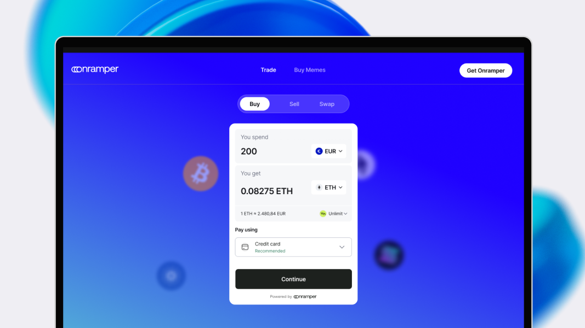
Introducing our new crypto trading portal: the easiest way to buy, sell and swap
Buying crypto should be simple. Selling and swapping should feel just as easy. That’s why we’re leveling up the Onramper experience to make this a reality.
Meet our new crypto portal, the world’s simplest all-in-one trading platform. It brings buying, selling and swapping together in one place with the best available fees and full global coverage.
One place for everything
It’s easy for trading flows to feel scattered, with buying, swapping and selling all living in different places. We set out to fix that..
Our portal brings everything together so the entire journey stays clear and straightforward from start to finish. You can now:
- Buy crypto with 170+ payment methods
- Sell back to fiat
- Swap 100K+ assets across 50+ networks, with 11+ liquidity providers
All from one clean, intuitive interface.
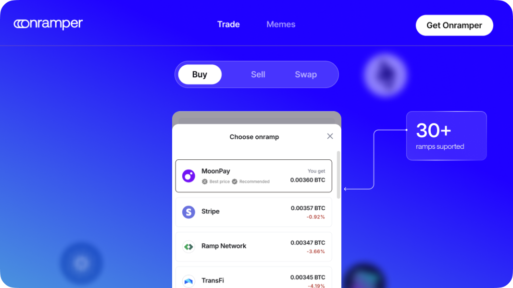
Always the best fees, automatically
Crypto pricing moves fast, with fees constantly shifting based on payment method, geography, KYC requirements and liquidity. Our smart routing engine tracks all of it in real time and selects the best provider automatically.
We do the work, and you get the best fees with the highest chance of transaction success.
Any payment method. Any user.
A global product requires global payment coverage. The new portal supports 175+ payment methods including cards, Apple Pay, Google Pay, bank transfers, regional options and alternative methods found in high-growth markets.
Since payment preferences vary by region, the interface automatically highlights the options that perform best in your area. This keeps the experience fast, familiar and easy for any user, anywhere.
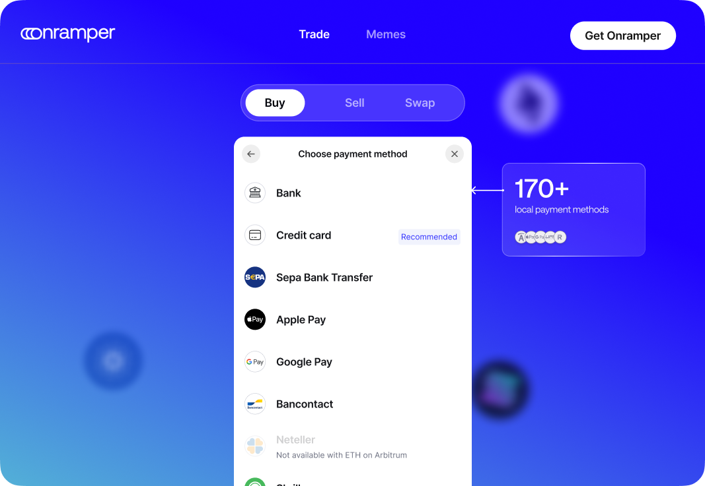
Buy any memecoin on Solana with MoonGate
The rise of memecoins has changed what’s expected from a trading experience. People want speed, simplicity and access to the long tail of new tokens.
By integrating MoonGate directly into the portal, we deliver exactly that. You can:
- Sign in with Google or Apple to generate a wallet instantly
- Discover trending Solana tokens
- Buy or swap into any memecoin in seconds
No separate setup and no manual wallet creation. Just instant access.
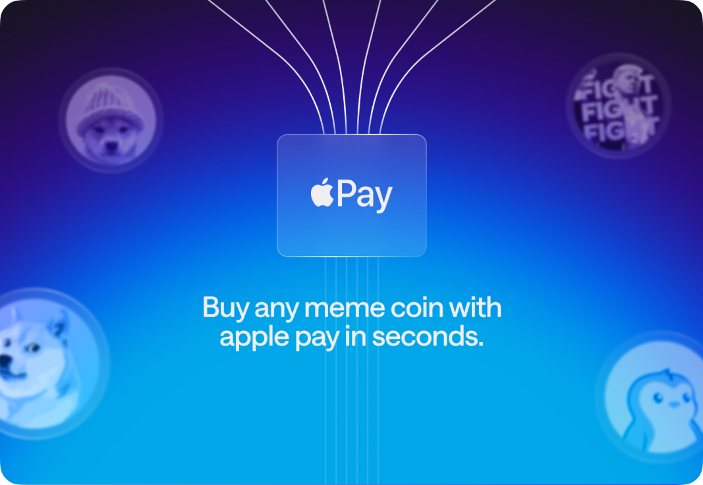
This is just the beginning
This portal isn’t an add-on. It’s a dedicated page built around a single widget that supports every trade type in one unified experience. And it’s only the first version.
We’ll continue adding new features that streamline the entire trading journey. From smarter token discovery to personalized payment suggestions, our goal is to create the smoothest crypto trading experience possible.
Try the full experience here: https://onramper.webflow.io/buy
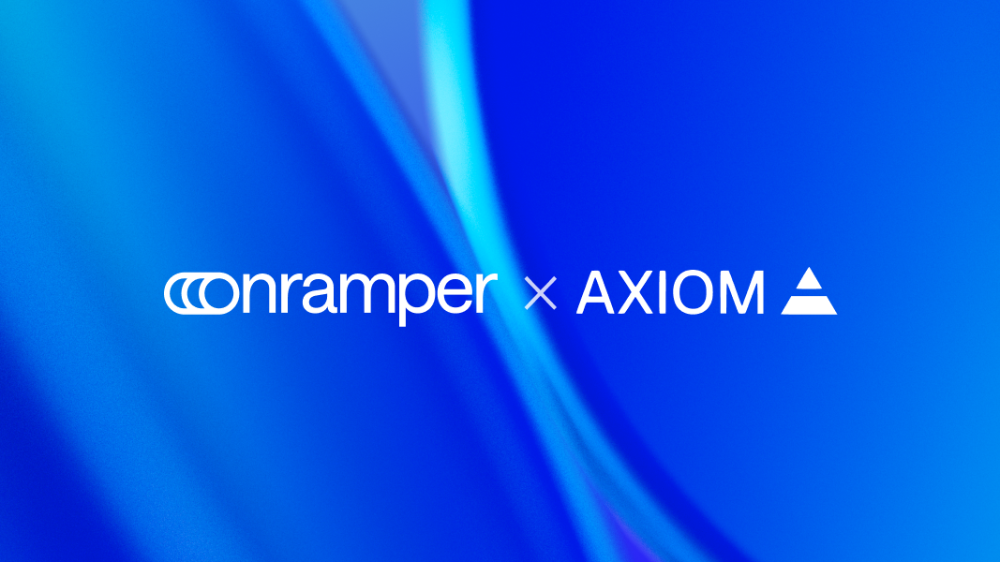
Axiom Partners with Onramper to Power Seamless DeFi Trading
With Onramper, Axiom users around the world can top up BNB and SOL with 130+ payment methods including Apple Pay and Venmo.
AMSTERDAM, December 4, 2025 – Onramper, the world’s leading fiat-to-crypto onramp aggregator, announced a partnership with Axiom, the Y Combinator-backed Solana-based trading platform, to deliver one of the fastest and most seamless trading experiences in DeFi. Through this integration, Axiom users worldwide can instantly top up BNB and SOL using more than 130 payment methods, including Apple Pay, Google Pay, Venmo, debit and credit cards, and localized options across 190 countries.
Axiom has quickly become one of the top trading platforms in the Solana ecosystem, offering access to memecoins, perpetuals, and yield strategies. In October 2025, the platform made history as the fastest crypto company to reach $300 million in revenue. Through its collaboration with Onramper, Axiom is offering users a simple, fast way to onboard and begin trading on Solana.
“Our job is to simplify the way users move from fiat into crypto,” said Thijs Maas, CEO of Onramper. “By offering a wide range of trusted, localized payment options, we ensure that users can onboard quickly and compliantly. We’re thrilled to support Axiom as they scale the next generation of DeFi on Solana.”
Onramper’s network supports more than 130 payment methods and enables crypto purchases across 190+ countries. Its routing engine recommends the best available conversion in real-time, maximizing the chances of a successful transaction and helping users receive the most crypto for their fiat.
“We’re delivering an onchain trading experience that is fast, global, and intuitive,” said Henry Zhang, Co-Founder and CEO of Axiom. “Integrating Onramper strengthens that experience by giving users a reliable way to move from fiat to crypto and access onchain liquidity.”
Onramper continues to lead the onramp aggregation space, connecting more than 30 global fiat gateways and supporting over 2,000 digital assets, driving greater accessibility and inclusivity across Web3.
To learn more, please visit onramper.com and axiom.trade.
About Onramper
Onramper is the leading fiat-to-crypto payments aggregator, providing a turnkey API-based solution for dynamically routing fiat-to-crypto onramp flows based on algorithms optimizing for conversion, fees and payment methods. Onramper’s platform allows users of clients to buy 2000+ digital assets, in over 190 countries with over 130 payment methods in 120 currencies, with advanced routing options and unified analytics. The company is based in the Netherlands. To learn more about Onramper, visit www.onramper.com.
About Axiom
Axiom is a trading platform designed to be the only application you need to trade onchain. It offers a suite of integrations that allow users to trade the hottest assets, all in one place.
For media enquiries, contact:
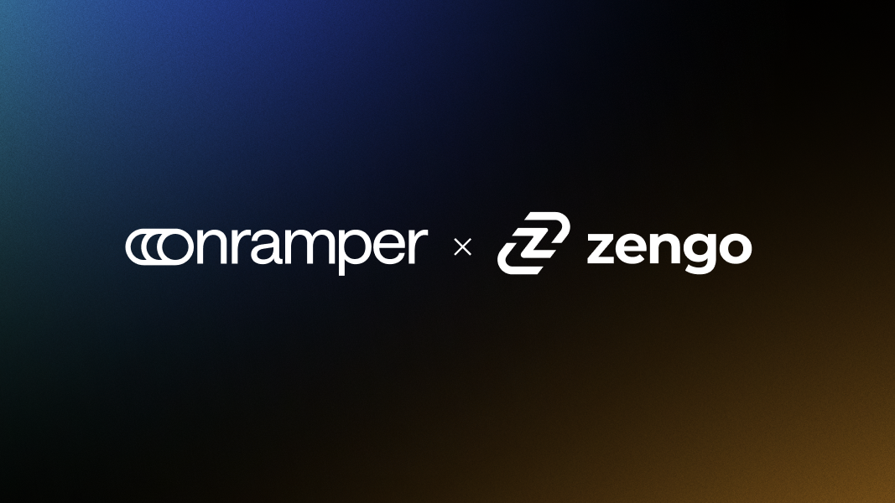
Zengo Enters Partnership with Onramper to Unlock Global Crypto Access
Collaboration will power 130+ payment methods across LATAM, SEA, Africa, and more, simplifying fiat-to-crypto onboarding worldwide
AMSTERDAM, Nov. 5, 2025 /PRNewswire/ -- Onramper, the world’s leading fiat-to-crypto onramp aggregator, today announced a partnership with Zengo Wallet, the most secure self-custodial crypto wallet trusted by millions, to expand global payment access for users.
Through this collaboration, Zengo users can now buy crypto through Onramper at the most competitive fees available, starting at just 2% for Zengo Pro users. The integration supports more than 130 local payment methods, streamlining purchases across key markets in Latin America, Southeast Asia, and Africa.
The partnership also enables a seamless onboarding flow for first-time users, while returning users are automatically directed back to their preferred payment providers–delivering a faster, more intuitive, and personalized experience.
“Access to crypto should not depend on where you live or which payment method you use,” said Thijs Maas, CEO of Onramper. “By partnering with Zengo, we’re removing the barriers that have limited participation in Web3, especially in regions with high demand but limited infrastructure. Together, we are making it easier for anyone, anywhere, to enter the crypto economy safely and efficiently.”
This partnership reinforces Zengo’s mission to make crypto ownership simple and secure, particularly in emerging markets where local payment coverage is key to adoption. By integrating Onramper’s technology, Zengo users will enjoy smoother onboarding, lower fees, and a more consistent purchasing experience, whether they are new or returning customers.
“At Zengo, our goal is to provide secure and low-cost access to any type of digital asset for individuals and businesses,” said Ouriel Ohayon, co-founder and CEO of Zengo. “Through our partnership with Onramper, we’re expanding global access to crypto and stablecoins with a faster, cheaper, and wider selection of payment methods anywhere, anytime.”
Integrating local payment methods across multiple regions has long been a complex and resource-heavy process for crypto platforms. Onramper’s aggregation technology removes this barrier by unifying both global and local onramps within a single API, giving partners instant access to the world’s most comprehensive fiat-to-crypto infrastructure.
Onramper continues to lead the onramp aggregation space, connecting more than 30 global fiat gateways and supporting over 2,000 digital assets in more than 190 countries, driving greater accessibility and inclusivity across Web3.
To learn more, please visit onramper.com and zengo.com.
About Onramper
Onramper is the leading fiat-to-crypto payments aggregator, providing a turnkey API-based solution for dynamically routing fiat-to-crypto onramp flows based on algorithms optimizing for conversion, fees and payment methods. Onramper’s platform allows users of clients to buy 2000+ digital assets, in over 190 countries with over 130 payment methods in 120 currencies, with advanced routing options and unified analytics. The company is based in the Netherlands. To learn more about Onramper, visit www.onramper.com.
About Zengo Wallet
Zengo Wallet is the most secure self-custodial crypto wallet, trusted by over 2 million individuals and businesses in 180+ countries. Since 2018, no Zengo wallet has ever been hacked. Zengo Pro includes advanced features like Bitcoin Vaults, an inheritance-style feature, and now, heavily discounted fees on purchase. Powered by MPC cryptography, Zengo has no seed phrase vulnerability and is backed by Insight Partners, Tether, and other leading investors.
For media enquiries, contact:
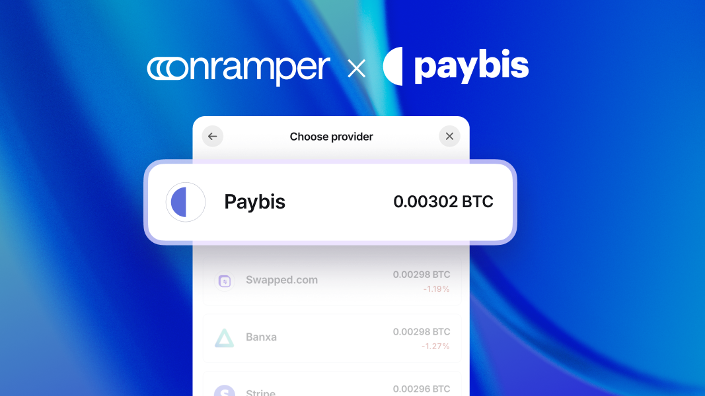
Onramper Integrates Paybis to Expand Global Crypto Payment Coverage
Onramper, the world’s leading fiat-to-crypto onramp aggregator, has integrated global cryptocurrency exchange Paybis.
October 15, 2025 – Onramper, the world’s leading fiat-to-crypto onramp aggregator, has integrated global cryptocurrency exchange Paybis, expanding its network of payment providers and improving how users around the world buy digital assets.
Through the integration, Onramper partners gain instant access to Paybis’ high-conversion payment flows, including Apple Pay and Google Pay, without any additional development effort. Businesses can now offer faster, more familiar, and secure payment options through a single API.
Paybis becomes the 30th onramp to join the Onramper network, extending its global coverage and giving partners even more flexibility in how they connect users to crypto.
Operating in more than 180 countries, Paybis enables users to buy, sell, and swap major cryptocurrencies using credit and debit cards, bank transfers, Apple Pay, Google Pay, and other local methods. Its one-tap Apple Pay experience is recognized for speed and reliability, helping make crypto purchases almost instant.
“Paybis has set the bar for low-friction, global payment experiences,” said Thijs Maas, CEO of Onramper. “We’re thrilled to bring them into our network. With 30 onramps now live, we’re giving our partners and their users more choice and a truly seamless way to enter the crypto economy.”
“Our mission has always been to make buying and selling crypto effortless,” said Konstantins Vasilenko, Head of Sales and Co-Founder at Paybis. “Partnering with Onramper helps us bring that simplicity to more users and businesses globally.”
The collaboration strengthens Onramper’s aggregated network, giving partners access to broader global coverage, faster transactions, and seamless integration through a single connection.
To learn more, please visit onramper.com and paybis.com.
About Paybis
Paybis is a global cryptocurrency exchange platform that provides fast, secure, and user-friendly digital asset transactions. Founded in 2014, the company specializes in fiat-to-crypto and crypto-to-fiat conversions, enabling users to buy, sell, and swap Bitcoin, Ethereum, and other cryptocurrencies using various payment methods, including credit/debit cards, bank transfers, and e-wallets.
With a strong focus on security and compliance, Paybis is registered with regulatory authorities and implements industry-leading AML/KYC procedures. The platform is known for its intuitive interface, 24/7 customer support, and competitive exchange rates.
About Onramper
Onramper is the leading fiat-to-crypto payments aggregator, providing a turnkey API-based solution for dynamically routing fiat-to-crypto onramp flows based on algorithms optimizing for conversion, fees and payment methods. Onramper’s platform allows users of clients to buy 2000+ digital assets, in over 190 countries with over 130 payment methods in 120 currencies, with advanced routing options and unified analytics. The company is based in the Netherlands. To learn more about Onramper, visit www.onramper.com.
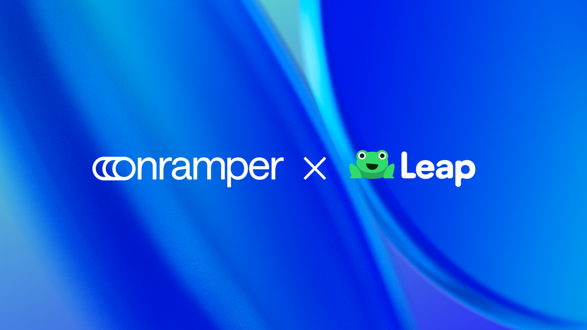
Leap Wallet integrates Onramper for exclusive fiat-to-crypto onramping
Leap Wallet has entered into an agreement with Onramper to power fiat on- and off-ramping across its mobile applications and browser extension.
Leap Wallet has entered into an agreement with Onramper to power fiat on- and off-ramping across its mobile applications and browser extension. The integration brings Onramper’s global infrastructure directly into Leap Wallet, enabling streamlined access to crypto for users around the world.
Since 2025, Leap Wallet has expanded beyond its initial focus on the Cosmos ecosystem to become a multi-chain wallet. Today, it natively supports Bitcoin, Ethereum, and over 200 additional blockchain networks, allowing users to manage assets across a wide range of ecosystems without switching platforms.
“As Leap Wallet has grown into a multi-chain platform, demand for a seamless onramping experience has surged,” says Sanjeev Rao, CEO of Leap Wallet. “Our mission is to streamline the flow of value across ecosystems—and by partnering with Onramper, we’re eliminating key barriers for users.”
Enhanced onramping coverage
With this significant expansion, Leap Wallet recognized the necessity of robust and accessible onramping solutions to serve its growing user base. To address this, Leap Wallet is now integrating Onramper exclusively. This partnership allows users to:
- Access onramping for thousands of tokens
- Benefit from coverage across 200+ blockchain networks
- Enjoy frictionless fiat-to-crypto transactions, catering to both new and experienced users
By leveraging Onramper’s capabilities, Leap Wallet ensures its users experience reliable, broad, and convenient access to a wide range of cryptocurrencies, further reinforcing its position as a top-choice multi-chain wallet for global digital asset management.
“Crypto users need fast, secure, and reliable access to liquidity,” says Thijs Maas, CEO of Onramper. “Through this partnership with Leap Wallet, we’re bringing our global onramping infrastructure directly into one of the most advanced multi-chain platforms, enabling seamless value movement at scale.”
To learn more, visit onramper.com and leapwallet.io.
No results found.